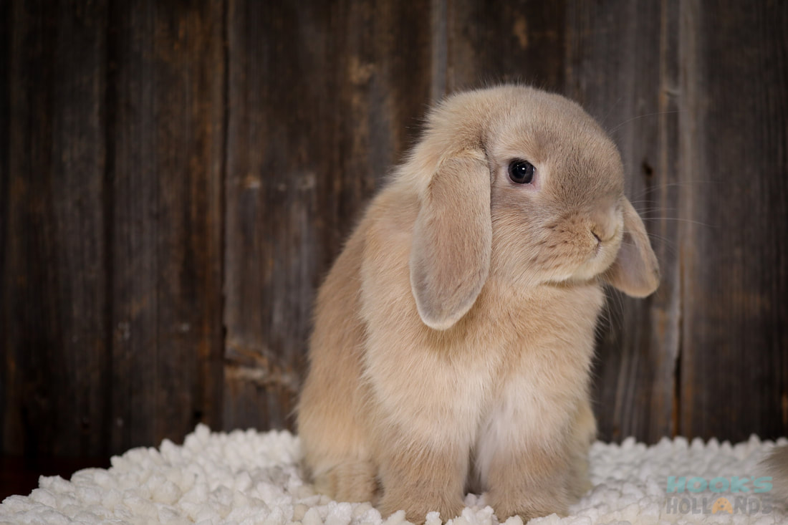
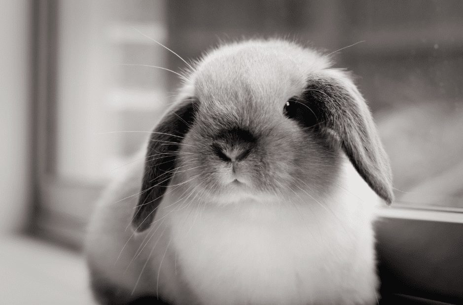
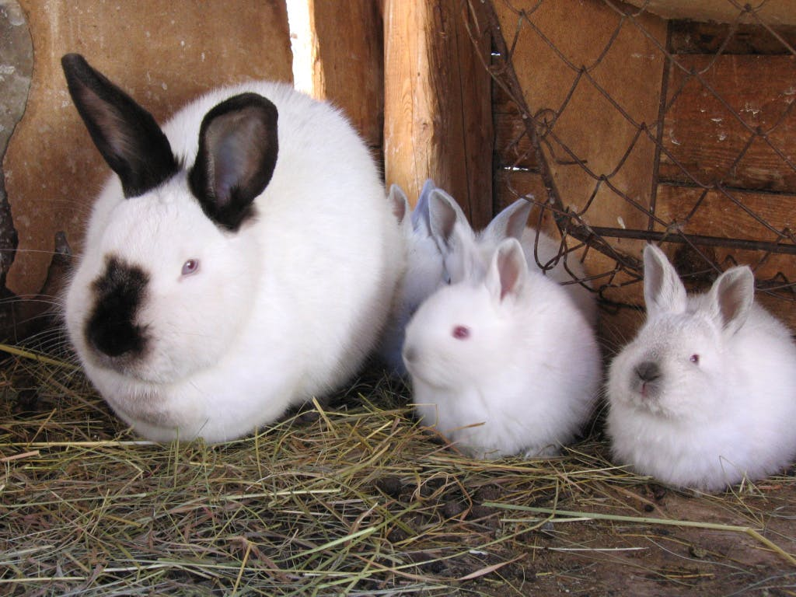
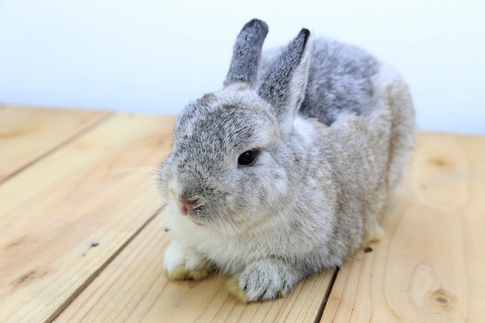
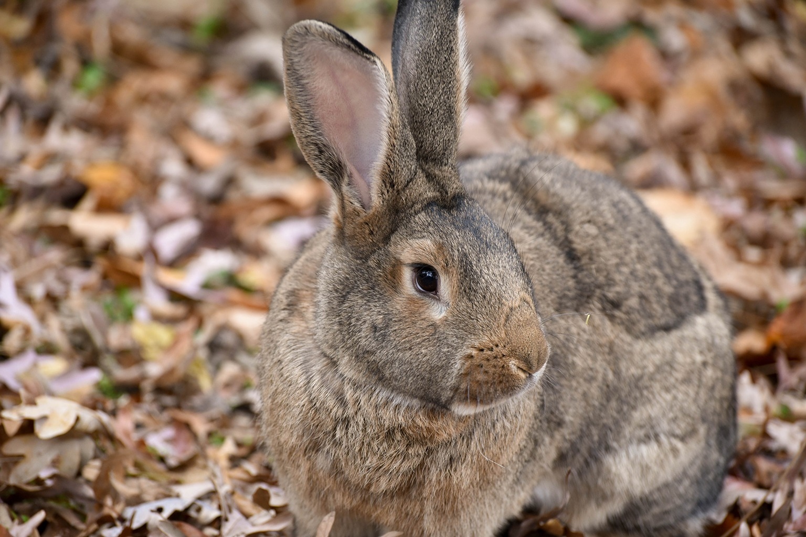

Introduction
Are you looking to add a big-eared, hay-munching member to your family? While they require more
care
than many people would think, rabbits make great pets. Unlike dogs, they’re quiet and won’t bark
at
the
slightest noise. Unlike cats, they won’t wake you up at 6 a.m. demanding to be fed. Rabbits can
be
trained to do tricks and use the litter box, they know how to keep themselves clean, and they’re
affectionate little critters. In other words, rabbits are pawsome! There are several breeds of
rabbits,
each with their own endearing characteristics. Here are 10 of the most popular to help you find
your
new
adorable companion!

Holland Lop
The Holland Lop, developed in the Netherlands as a smaller version of the French Lop,
sports
cute
floppy ears that frame their large head. Add a friendly personality to the mix, and
you’ve
got a
breed that’s a sure winner! It’s easy to see why this breed, which comes in more than 30
colors,
is
one of the most popular around the world.
Mini Lop
Though a relatively small breed, the Mini Lop is actually larger than the Holland Lop. With
their stocky body, softball-sized head, and delightful lopped ears, there’s nothing small
about the appeal of this breed. The Mini Lop is as cuddly and as affectionate as they look,
making them a joy to have around the house.

Californian
If you’re looking for a breed that loves to play, then the Californian is a furrific choice.
Though they may seem shy at first, this breed is a “people rabbit” whose personality will
shine with proper socialization. Almost completely white except for black markings on the
nose, ears, feet, and tail, the Californian enjoys both playtime and cuddle time.

Netherland Dwarf
Weighing in at only 2.5 lbs, the Netherland Dwarf is one of the smallest rabbit breeds. With
a brachycephalic head, short ears, and large eyes, there’s no dispute about their cuteness.
The Netherland Dwarf can be skittish, however, so they’re not recommended for young
children. But with the right family, this sweet little bunny will come out of their shell.

Flemish Giant
The gentle giant of the rabbit world, the Flemish Giant is the one of the largest and oldest
recognized breeds. They can weigh up to 20 lbs, but as their nickname implies, they are
laid-back and well-mannered. Thus, despite their huge size, the Flemish Giant makes a
wonderful companion for first-time rabbit parents as well as families with kids of any age.
